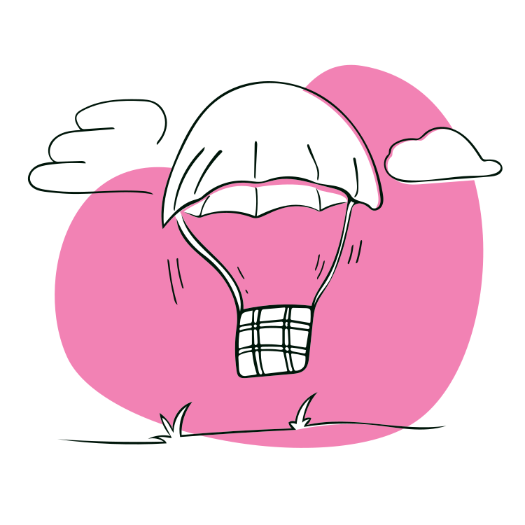
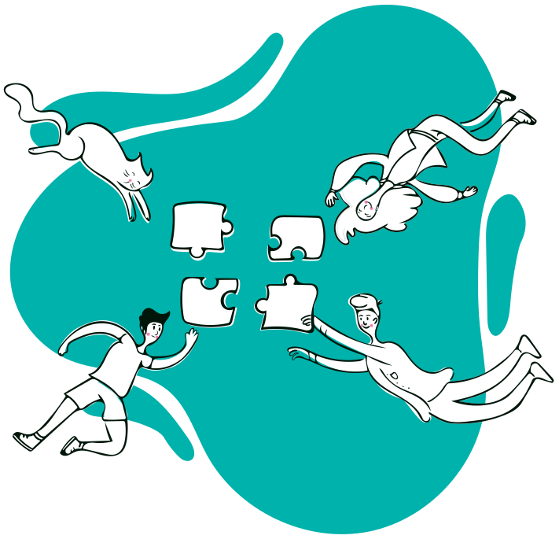

Project Overview
The product
Blink Bakery is a regional homemade cake maker located in city of Canberra. Blink Bakery strives to deliver healthy and customised cakes. They offer a wide spectrum of reasonable pricing. Their target customers are event managers, family and students who lack the time and needs systematic ordering process.
Project Duration
Jul 2021 - Nov 2021
My Role
UI/UX Designer designing an app for Blink Bakery from conception to delivery.
Scope of work
Conducting interviews, paper and digital wireframing, low and high-fidelity prototyping, conducting usability studies, accounting for accessibility, and iterating on designs.
Tools Used
Adobe illustrator, Figma, Google Forms
The problem
Busy workers and event organiser lack the time and missing systematic dedicated app for bakery hurdles the customers.
The goal
Design a mobile app for Blink Bakery that allows users to order and manage their multiple orders easily and efficiently.
Process
Empathize & Define
USER RESEARCH
Summary
I conducted interviews and created empathy map for one user group to
understand the users I am designing for and their needs.
A primary user
group identified through research was working adults who doesn’t bake much at home.
This user group confirmed initial assumptions about bakery but research also
revealed that time was not the only factor limiting users from baking at home. Other
user problems included obligations, interests, or challenges that make it difficult
to get customised order or reservation option.
One User Group
Consisting of 5 users
Pain points
4 main scope to improve
Empathy Map
- Spent time with family
- Work-life balance is little complicated but ensures address comfortably
- Good flow with day-to-day schedule
- Doesn’t bake at home
- Ordering over phone all the time
- Food-lover
- If there is food customisation options
- Reservation options
- Coordination of pick-up will reduce time
- Adding home delivery options
- Managing multiple orders
- Up-to-date digital catalogue
- Order history integrated
- Easy to record recurring orders
- Cashless and payment options
- Some are recently graduated
- Goes to bakery to pick-up the order
- Staying at home during off time
- Chef at busy restaurant
- IT Specialist
- Does home-made baking during occasion
- Organising lots of business events
- Playing soccer and jogging every evening
- Waiting time makes us frustrated
- Feeling tempted to eat when friends bring cakes
- Prices should be reasonable
- High time move on with technology to curve the traditional ways of ordering
- Service that is convenient to use and reduce time
- Getting different order is nuisance
Pain points
These user group confirmed initial assumption about ordering baked food, but research also revealed that user were busy working adults with limited time availability to make their orders. Other user problems included customisation option, accessibility and proper way to track their past orders.
Time
Working adults are too busy to bake at home
Customisation
Only limited bakery have platform that lets customer to customise their orders
Accessibilty
Platform for ordering baked food items are not equipped with assistive technologies
History
Customers find difficult to track their past orders and also to manage their recurring orders
Persona
Based on the user group interviewed, two persona were created to represent common needs of the user that can help in creating as base to built the app.
Problem Statement
Lachlan is a recent graduate working as Chef who needs a faster and well coordinated way to place an order because waiting in-line to pick orders is time consuming and ordering over phone doesn’t guarantee accurate orders.

Goal Statement
Our Blink Bakery app will let users place order in advance which will affect users who desire for accurate orders by letting users skip the phone call ordering process.
Measure
We will measure effectiveness by tracking accuracy of first 5 user’s order.
Hypothesis
If Lachlan downloads the Blink Bakery ordering app, then they can keep accurate records for their orders.
Problem Statement
Samantha is a Business Manager with good organisation personality who needs shop that provides systematic ordering process like managing multiple orders because placing new orders without proper record every time can be frustrating experience.
Goal Statement
Our Blink Bakery app will let users manage multiple orders which will affect users who have to place multiple recurrent orders by letting users preview and edit past order to make a new order easily.
Measure
We will measure effectiveness by tracking number of edited past orders.
Hypothesis
If Samantha use the Blink Bakery ordering app, then they can manage multiple orders easily
User Journey Map
Mapping Samantha’s user journey revealed how helpful it would be for users to have access to a dedicated Bakery’s app.
Ideate
User Flow
Before starting design of an app, mapping of user flow helped to picture how users will move through the app. Following were determined in my user flow:
- What actions will users take in the app?
- What decisions will users make?
- What screens will users experience after taking action or making a decision?
wireframes
Paper wireframes
Taking the time to draft iterations of each screen of the app on
paper ensured that the elements that made it to digital wireframes would be
well-suited to address user pain points. For the home screen, I prioritised a quick
and easy ordering process to help users save time.
Stars were used to mark the elements of each sketch that would be used in the initial digital wireframes.
Digital wireframes
As the initial design phase continued, I made sure to base screen
designs on feedback and findings from the user research.
Easy
customisation was a key user need to address in the designs in addition to equipping
the app with accessible designs
Prototype & test
Prototype
Low-fidelity prototype
The low-fidelity prototype connected the primary user flow of
managing and ordering baked food, so the prototype could be used in a usability
study with users.
Clink to view the Blink Bakery low-fidelity
prototype
Usability study
I conducted two rounds of usability studies. Findings from the first
study helped guide the designs from wireframes to mockups. The second study used a
high-fidelity prototype and revealed what aspects of the mockups needed
refining.
Time
20 - 30mins for each users
Participants
Total of 5 users
Study type
Unmoderated Usability Study
Location
Canberra, Remote
Affinity diagram
After the studies, I synthesised data and started categorising to
find the common themes and generated insights from that. The methodology being used
is Affinity diagram.
Findings
- Users need better search filter to find their desired items more easily
- Users need more category options
- Users need cake customisation option
- Hint for extra charge should be given in the shopping cart so customer don’t get surprises.
- ‘Track order’ can be in shopping cart page instead of hidden in profile page.
Refinement & Mockup
Design system
In addition to designing app logo and branding, I also created
design system for the app which not only helped my workflow become more efficient,
but also establish principles for the application providing consistency and
efficiency while working independently or if working as a part of a team.
Refinements
Early designs allowed for some customisation, but after the
usability studies, I added additional categories to select cakes. I also added
‘shop by diet’ so users have more options when they first land on
the home screen.
The second usability study revealed frustration with the
surprised additional price in the checkout process. To streamline this flow, I added
text ‘shipping and additional charges calculated in next screen’ in
the Shopping cart page. I also moved ‘track order’ from Profile
page to Shopping cart.
Mock up
High-fidelity prototype
The final high-fidelity prototype presented cleaner user flow
including refinements to cake selection and checkout process. It also met user needs
for a pickup or delivery option as well as more customisation options.
Clink to view the Blink Bakery high-fidelity
prototype
accessibility
Icons
Used icons to make the navigation easier
WCAG
Used contrast colours at least passing WCAG AA throughout the design
Images
Used detailed imagery for cakes to help all users better understand and make accurate selection
Tap
Used larger buttons and clickable image to assist visually challenged users
Going forward
Takeaways
Impact: The app makes users feel like Blink Bakery
listen to its customer and offers various choices to meet different occasions as per
the user’s needs.
What I learned: While designing the
Blink Bakery app,I learned that the first ideas for the app are only the beginning
of the process. Usability studies and peer feedback influenced each iteration of the
app’s designs.
One quote from peer feedback:
“This
app is so easy to use and customise cakes based on our likings which is sure to be
in my mobile install checklist.”